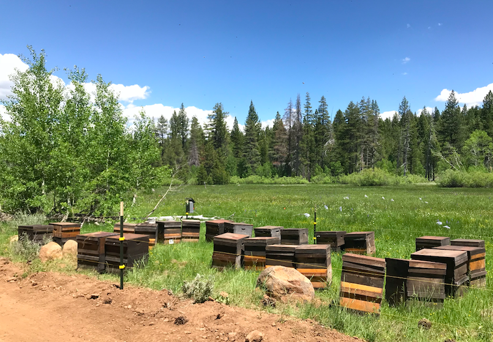
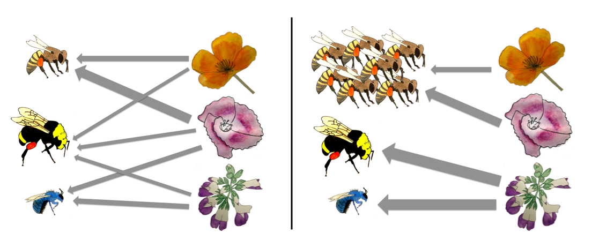

I am broadly interested in pollination ecology and pollinator conservation. My previous research has included developing a solitary bee monitoring program for the Bernard Field Station (Claremont, CA) and investigating whether some insects are more effective at pollinating Echinacea angustifolia than others. My dissertation research focuses on (i) assessing the impact of honey bee introductions on native bee visitation patterns and native plant pollination and (ii) optimizing wildflower plantings to simultaneously support managed and native bees.
Investigating how honey bee introductions affect native bees and native plants
I’m working in the California Central Valley and the Sierra to ask a series of questions about the impacts of honey bee introductions on (i) the depletion of nectar and pollen from important floral resources, (ii) native bee visitation patterns, and (iii) the pollination of native plants.
Native bees and introduced honey bees use many of the same floral resources, which should theoretically lead to competition. However, it is not clear whether honey bee introductions will significantly reduce nectar and pollen availability in all contexts or whether increasing floral abundance in agricultural landscapes may mitigate against competition.
Furthermore, even less is known about how honey bee introductions will affect native plant communities. Honey bees could either augment or diminish native plant reproduction, depending on their impact on the visitation patterns and effectiveness of other pollinators as well as their own effectiveness at pollinating native plants.
 Hives at one of my field sites in the Sierra
Optimizing flower plantings to simultaneously support native and managed bees
Currently, pollinator-friendly plant mixes are selected using estimates of flower visitation without considering among-plant differences in nutritional quality or how competition among bees might affect plant use. Using data on the network of interactions between pollinators and plants in conjunction with data on the nutritional value of plant resources, I’m working to identify plant mixes that meet the goals of enhancing honey bee nutrition and maximizing support of diverse bee communities while minimizing competition.
 Figure 1: Predicted networks and low and high honey bee abundance.